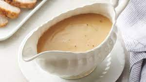

Turkey Gravy

This simple turkey gravy is
Ingredients
- 1/2 Cup Fat from Turkey
- 1/2 Cup Flour
- 1 Cup Drippings
- 2 Cups Turkey Stock
- Pepper
Steps
- Heat fat from turkey drippings in a saucepan over medium-low heat until liquefied, 2 to 3 minutes. Whisk flour into turkey fat until golden, about 5 minutes.
- Whisk liquid from turkey drippings and turkey stock into fat-flour mixture; increase heat to medium and cook, whisking continuously, until gravy is smooth and desired consistency, 5 to 10 minutes. Season gravy with pepper.